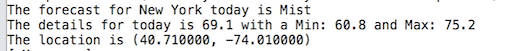

Duration
20 minutes
Lab goals
The primary goal of this lab is to use the JSON type provider in the F# REPL to connect to a remote data source, extract and process specific data. The high level steps you will perform are:
- Create a new F# library application (you'll be working with the script file).
- Download FSharp Data using NuGet.
- Load the JSON Type Provider with data from OpenWeatherMap.org.
- Connect to the weather service and access to the weather data for your chosen city.
- Convert temperatures from Kelvin to either Celsius or Fahrenheit.
- Run your code in the REPL.

Steps
Create a new F# library application and add the F# Data package
- Create a new F# library application.
- Display the REPL (F# Interactive).
- Add the FSharp.Data type provider package using NuGet. This will download the appropriate DLL file which we can then reference in our script.
- Open the script.fsx file - this is where we will add our code.
- Add a reference and open the FSharp.Data.dll library in your script file.
Recall that you will use the
r#command to add the reference to the script. - Open the System.Net namespace which contains the JSON Type Provider.
Load the JSON Type Provider
- Visit http://openweathermap.org/appid to obtain a new API key. You will need the new details in order to use the Type Provider
-
Create a new type alias for the provider.
Use the
JsonProvider<>type and pass a reference URL for the weather service including the api key you obtained from openweathermap.org. This provides example data to the JSON Type Provider.type Weather = JsonProvider<"http://api.openweathermap.org/data/2.5/weather?q=Sydney&APPID=<apikey>">
Read the weather data
- Open a browser to the reference implementation location http://api.openweathermap.org/data/2.5/weather?q=Sydney&APPID=<apikey> and examine the structure to understand what data will be imported. This will be helpful when you are working with the provider, and will help you appreciate just how much work the type provider does for you.
-
Next, create a function called displayWeather which will take a parameter city.
city will be a string parameter, but it will be passed to the weather service as part of the URL, so will need to be URL encoded using the
WebUtility.UrlEncodefunction to ensure it is in the correct format. Construct a string that appends the encoded city to"http://api.openweathermap.org/data/2.5/weather?q=Sydney&APPID=apikey". -
Define a new value called
infothat retrieves the information from the Type Provider by calling theWeather.Loadmethod passing in the constructed URL that includes the city.
Display the weather data
The Type Provider you've created will provide you with plenty of information that is available that mirrors the structure diaplayed in JSON page in your browser.
- In your displayWeather function, use printfn to display information about the location, and the current, minimum, and maximum temperatures. You can find more about the JSON data structure at the Open Weather Map API page.
- Call displayWeather passing a city of your choice. The code below uses "New York".
- Select the code and press Ctrl+Enter to run it in the REPL environment.
Convert temperatures from Kelvin
All the temperatures returned from the weather service are in degrees Kelvin. We'll provide an appropriate conversion to either Fahrenheit or Celsius.
To convert from Kelvin to Celsius, subtract 273.15 from the Kelvin amount.
To convert from Kelvin to Fahrenheit, multiply the Kelvin amount by 1.8 (9/5) and then subtract 459.67 from the result.
- Create a kelvinToCelsius function that accepts a single parameter and performs the conversion to Celsius.
- Create a kelvinToFarenheit function that accepts a point parameter and performs the conversion to Fahrenheit.
- Use the conversion function of your choice to convert the temperature data.
- Select the code and press CTRL+ENTER to run it in the REPL environment. If you need some help, the entire completed script is shown below.
Additional Reading
There are various ways to measure temperature such as Kelvin, Celsius and Fahrenheit. These units are good candidates for using F#'s awesome feature: Units of Measure. Open the Script file in the Additional folder for the lab and exam the code. It shows an improved version using Units of Measure. Examine how the [<Measure>] attribute and the units are applied against the values from the REST service.
Summary
During this lab you have gained experience connecting to the JSON type provider and extracting data from it.